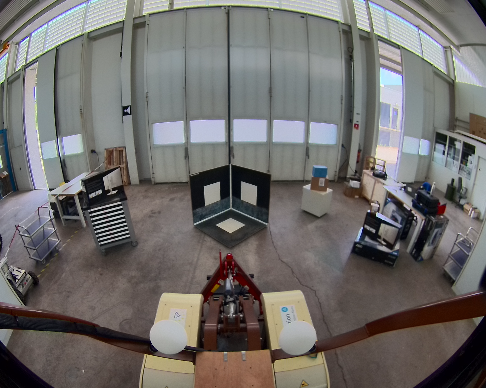
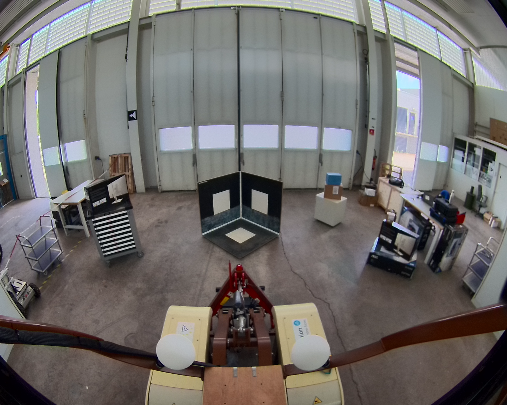
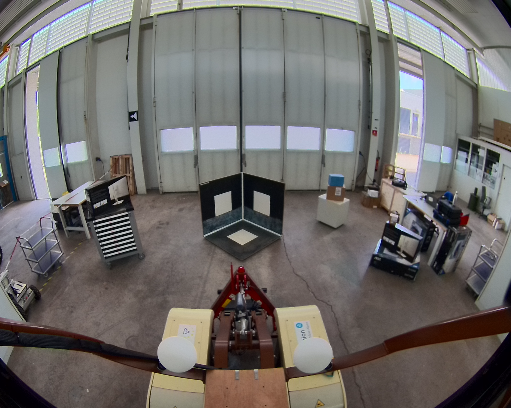

Chemin complet : /data/synchro_data/Innodura/Agrivia/Données/2024_bag/record_calib_jc_1

Files: record_calib_jc_1_0.db3
Bag size: 64.9 MiB
Storage id: sqlite3
Duration: 8.016553452s
Start: Aug 8 2024 13:14:16.408256510 (1723115656.408256510)
End: Aug 8 2024 13:14:24.424809962 (1723115664.424809962)
Messages: 14
Topic information: Topic: /alpo/camera/image_synchro | Type: sensor_msgs/msg/Image | Count: 9 | Serialization Format: cdr
Topic: /alpo/lidar/pointcloud_synchro | Type: sensor_msgs/msg/PointCloud2 | Count: 5 | Serialization Format: cdr